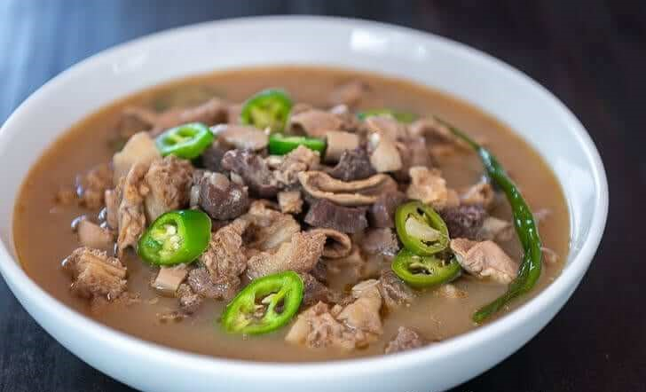

Beef Papaitan Recipe
What is Beef Papaitan?
Beef Papaitan or Papaitang Baka is a version of the popular Pinapaitan that makes use of the cows internal organs. This is my own take to this beloved dish. I made sure to make the process as simple as possible so that you can follow.
Ingredients
1 lb beef heart
1 lb beef small intestine
1 lb beef tripe
1/2 lb beef liver
1 lb beef kidney
22 grams Knorr Sinigang sa Sampaloc Mix
1 piece onion
3 thumbs ginger
5 cloves garlic
3 piece long green pepper
8 cups water
beef bile to taste
Salt and pepper to taste
3 tablespoons cooking oil
Instructions / How to Cook
1. Wash beef tripe and small intestine. Boil with ginger and dried bay leaves for 45 minutes. Remove from the pot and let it cool down. Slice into bite-size pieces.
2. Heat oil in a pan. Sauté onion, garlic, and ginger until onion softens.
3. Add beef heart and kidney. Sauté until it turns light brown.
4. Put the tripe and small intestines into the pot. Cook for 2 minutes.
5. Pour water into the pot. Let is boil. Adjust heat to low. Continue boiling until beef heart and kidney tenderizes.
6. Add beef liver and bile. Stir. Cook for 15 minutes in medium heat.
7. Add Knorr Sinigang sa Sampaloc Recipe Mix.
8. Put long green peppers into the pot and season with salt and ground black pepper. Stir. Cook for 2 minutes.
9. Transfer to a serving bowl. Serve hot.